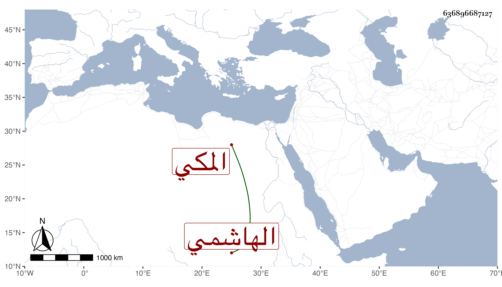

0902Sakhawi.DawLamic.ITO20230111-ara1.EIS1600.636896687127
Biography ID: 636896687127
629
أحمد بن مسعود بن هاشم بن علي بن مسعود بن غزوان بن حسين الشهاب أبو حامد الهاشمي المكي ابن عم الشيخ أبي سعد محمد بن علي بن هاشم الآني . ولد بعد العصر من يوم الاربعاء سابع عشرى ربيع الأول سنة خمس وثمانمائة . ذكره ابن فهد ولم يزد .
